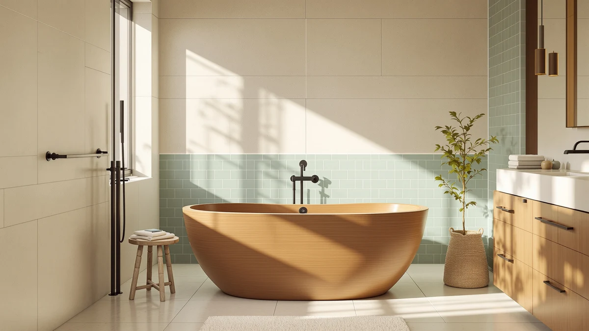

Lajeri Wooden Japanese Soaking Bathtub Review (2026): Worth It?


Quick Answer
For most shoppers researching a deep soaking tub, the Lajeri Wooden Japanese Soaking Bathtub stands out for its 28-inch depth and compact 63-inch by 24-inch footprint, even though it costs about the same as the stone resin alternatives from MEDUNJESS and MUIRYN. If a wood-style design and a true Japanese soaking profile matter more to you than an established review history, the Lajeri is the pick. If you'd rather save money, the SJ Star&Jane below undercuts it by about $46.
Our pick: Lajeri Wooden Japanese Soaking Bathtub, $1,395.99 Check Price on Amazon
Things to Know Before You Buy
- All four tubs in this Lajeri Wooden Japanese Soaking Bathtub review sit within about $46 of each other, between $1,349.99 and $1,395.99.
- Depth matters more than length for a soaking tub: the Lajeri's 28-inch height is well above the 20 to 22 inches typical of acrylic freestanding tubs.
- Material changes maintenance. A wood-style soaking tub has different upkeep needs than the stone resin and solid surface builds used by MUIRYN and SJ Star&Jane.
- The Lajeri's Amazon listing does not publish a verified star rating or review count yet, so early buyers are weighing specs and pricing rather than a review history.
- At 63 inches long and 24 inches wide, the Lajeri fits bathrooms that cannot accommodate a 67-inch or longer freestanding tub.
This lajeri wooden japanese soaking bathtub review exists because shoppers comparing deep soaking tubs keep running into the same problem: most freestanding tub listings look similar until you check the actual price and the actual depth. We compared the Lajeri's published dimensions, its current Amazon price, and the pattern across whatever verified owner feedback exists against three other soaking tubs in the same price range to see where it stands out and where it falls short.
The Lajeri Wooden Japanese Soaking Bathtub is the deepest of the four tubs we looked at, and for most people shopping for a traditional wood-style soak, it is the one worth starting with. MEDUNJESS, MUIRYN, and SJ Star&Jane all land within $50 of its $1,395.99 price, so this comparison is less about who is cheapest and more about which material, depth, and footprint actually fit your bathroom and the way you soak. None of the four tubs covered here are a bad buy on their specs alone; the differences that matter are depth, material, and how much floor space your bathroom can give up.
Why You Should Trust Us
Ilane Tall researches bathroom fixtures for Best Freestanding Bathtubs and put together this Lajeri Wooden Japanese Soaking Bathtub review by pulling the manufacturer's listed specs, tracking current Amazon pricing, and reading through whatever verified owner feedback is actually available for each tub mentioned here. We do not run a physical testing lab, and we do not install, mount, or soak in these tubs ourselves. Instead, we compare what the listings state, what current buyers report when that information exists, and how the pricing stacks up across similar soaking tubs so you can make a decision without doing that legwork yourself.
Our Research Process
For this Lajeri Wooden Japanese Soaking Bathtub review, we started with the product listing itself: dimensions, the material implied by the name, current price, and any accessories included. We then checked that price against the three other soaking tubs covered here, MEDUNJESS, MUIRYN, and SJ Star&Jane, all of which sit in the same roughly $1,350 to $1,400 bracket. Where verified owner reviews were available for a listing, we looked for recurring patterns rather than one-off complaints or praise. We excluded tubs that lacked clear pricing or published specs, and we did not assign or imply any rating or review count that is not actually published on these listings.
Overview & Specs

Lajeri Wooden Japanese Soaking Bathtub
What we like
- 28-inch depth, well above the 20 to 22 inches typical of acrylic freestanding tubs
- Compact 63-inch by 24-inch footprint fits bathrooms that can't take a longer tub
- Wood-style Japanese soaking profile that's still rare among freestanding tubs at this price
- Priced within $50 of the stone resin and solid surface alternatives in this review
Flaws but not dealbreakers
- The listing doesn't publish a star rating or review count yet, so you're relying on the spec sheet rather than buyer feedback
- The exact wood species and finish aren't broken out in the listing, so confirm that detail with the seller before buying
- At $1,395.99 it costs about the same as the larger stone resin tubs from MEDUNJESS and MUIRYN
| Material | — |
| Size | 63"L x 24"W x 28"H |
The Lajeri Wooden Japanese Soaking Bathtub measures 63 inches long, 24 inches wide, and 28 inches tall, which puts it on the deeper end of the freestanding tubs covered on this site. That extra height is the main reason to consider a Japanese-style soaking tub over a standard acrylic model: you sit rather than recline, and the water covers more of your body with less volume. At $1,395.99, the Lajeri sits right in the middle of the four tubs in this review, a few dollars under MEDUNJESS and MUIRYN and about $46 above the SJ Star&Jane.
Its compact 24-inch width is worth noting if your bathroom has already ruled out longer 67-inch or 71-inch freestanding tubs. The listing doesn't show a star rating or review count, which isn't unusual for a newer soaking tub on Amazon, but it does mean you're weighing dimensions and price rather than a track record of owner feedback. The three alternatives covered later in this review land in the same price bracket, so the decision mostly comes down to material and shape rather than cost.
What We Liked
What stands out most in this Lajeri Wooden Japanese Soaking Bathtub review is the depth. At 28 inches tall, the Lajeri is built for sitting rather than reclining, which is the whole point of a Japanese-style soaking tub. Most freestanding acrylic tubs on this site top out closer to 22 inches, so the Lajeri covers more of your body in less water without needing a larger footprint to do it.
The 63-inch by 24-inch footprint is also a practical advantage. A lot of bathrooms don't have room for a 67-inch or 71-inch freestanding tub, and the Lajeri's shorter length makes it one of the more compact deep-soak options covered on this site, without giving up the depth that defines the category.
Price is competitive rather than exceptional, and that's still a point in its favor. At $1,395.99, the Lajeri costs about the same as the stone resin MEDUNJESS and MUIRYN tubs in this review, so you aren't paying a premium for the wood-style look. You're paying the going rate for a deep soaking tub in this category, with a different material to show for it.
What Could Be Better
The biggest gap in this Lajeri bathtub review is information, not the product itself. The listing doesn't publish a star rating or review count, so you can't check it against a track record of verified buyer feedback the way you can with some longer-established tubs. That absence doesn't necessarily mean the tub underperforms. You're simply buying on specs and price alone, without a documented history to lean on.
The listing also doesn't specify an exact wood species, finish, or sealant, and that detail matters for a tub that sits in a wet bathroom every day. Confirm it with the seller before ordering rather than assuming it matches whatever image you have in mind for a traditional Japanese soaking tub.
At $1,395.99, the Lajeri isn't a budget pick. The SJ Star&Jane below undercuts it by about $46 while offering a similar soaking depth in a solid surface build, so shoppers who care mainly about price have a cheaper option to weigh against the Lajeri's wood-style design.
Who Is It For?
The Lajeri Wooden Japanese Soaking Bathtub makes the most sense for shoppers who specifically want a wood-style soaking profile and have a bathroom layout that favors a shorter, deeper tub over a long acrylic one. If you've been drawn to the look of a traditional Japanese ofuro-style bath but don't want to special-order one, the Lajeri is one of the few freestanding options built around that depth at a mainstream Amazon price.
It's a weaker fit if you need a published review history before committing $1,395.99, or if your bathroom can comfortably fit a longer 67-inch or 71-inch tub and you'd rather have the extra legroom those designs offer. Shoppers on a tighter budget should also look at the SJ Star&Jane before deciding, since it covers similar ground for less money. And if a wood-style finish isn't a requirement for you, the stone resin MEDUNJESS or MUIRYN options give you a different material at essentially the same price point.
Alternatives to Consider
If the Lajeri Wooden Japanese Soaking Bathtub doesn't feel like the right material or shape for your bathroom, these three alternatives sit within about $50 of its price and cover different builds: a standard freestanding tub, a stone resin tub, and a solid surface design.

Also Great
MEDUNJESS 59'' Free Standing Tub
A 59-inch freestanding tub priced within a dollar of the Lajeri, worth a look if you want a longer soak without stepping up to a 67-inch model.
$1,395.00
Check Price on Amazon
Also Great
MUIRYN 51 '' Stone Resin
A shorter 51-inch stone resin tub, a fit for compact bathrooms that still want a solid, non-wood build at nearly the same price as the Lajeri.
$1,389.99
Check Price on Amazon
Best Value
SJ Star&Jane Solid Surface Japanese
The closest match to the Lajeri's Japanese soaking profile, built in solid surface instead of wood, and the cheapest of the four tubs at $1,349.99.
$1,349.99
Check Price on AmazonFrequently Asked Questions
Is the Lajeri Wooden Japanese Soaking Bathtub worth the price?
At $1,395.99, the Lajeri competes directly with stone resin and solid surface tubs in the same price bracket. It's worth the money if you specifically want a wood-style Japanese soaking profile and a compact 63-inch by 24-inch footprint. If material doesn't matter to you, the SJ Star&Jane offers a similar depth for about $46 less.
How deep is the Lajeri Wooden Japanese Soaking Bathtub compared to a standard freestanding tub?
The Lajeri measures 28 inches tall, several inches deeper than the 20 to 22 inches typical of acrylic freestanding tubs. That extra height is what makes a seated soak possible instead of a reclining one.
Does the Lajeri Wooden Japanese Soaking Bathtub have verified owner reviews?
The listing doesn't publish a star rating or review count at the time of this review, so the comparison here rests on dimensions and pricing rather than a history of verified buyer feedback.
Final Verdict
This Lajeri Wooden Japanese Soaking Bathtub review comes down to one tradeoff: depth and wood-style design against an established review history. Lajeri delivers the deepest, most traditionally shaped soaking tub of the four we compared, at a price that matches its stone resin and solid surface competitors. If that profile fits your bathroom and the way you soak, it's the pick. If you'd rather buy with a published review history behind you, or save about $46, weigh the MEDUNJESS, MUIRYN, or SJ Star&Jane alternatives covered above before you decide.